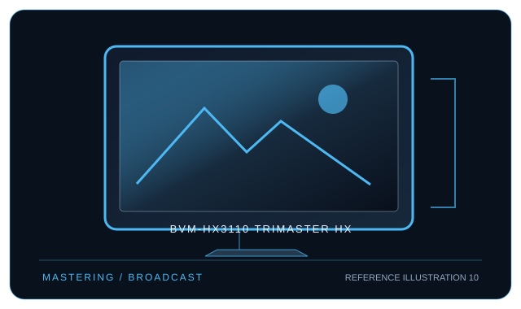

[ INDIVIDUAL COMPONENT // DISPLAYS ]
Sony BVM-HX3110 TRIMASTER HX
31-inch 4K TRIMASTER HX reference LCD for mastering and live production workflows.

IDENTIFICATION: Sony model BVM-HX3110 TRIMASTER HX. Confirm the full rear-label model, region and hardware revision; published capabilities can differ by firmware, input board and bundle.
Specifications
| Catalog subcategory | Professional displays |
|---|---|
| Exact model / panel | 31-inch class (30.5-inch viewable) Dual-layer LCD reference panel with high-brightness backlight |
| Native resolution | 3840 × 2160 (UHD 4K, 16:9) |
| Refresh rate | Up to 60 Hz for supported UHD 4K input formats |
| Color gamut | Supports BT.2020, DCI-P3 and BT.709 production workflows; supported gamut/coverage depends on signal mode and Sony configuration—consult the specification for measured coverage. |
| Calibration features | Monitor-side calibration and uniformity/color management; external reference probes are used for measurement and calibration workflows. Sony monitor control and 3D LUT functions are model/configuration dependent. |
| Inputs / companion ports | 12G/3G/HD/SD-SDI BNC inputs and HDMI 2.0 input; professional I/O options vary by configured unit. No general-purpose USB-C host video input. |
| VESA / mounting | No conventional desktop VESA pattern is specified in the product-facing documentation; use Sony-approved stand/rack or installation accessories and confirm the exact chassis option. |
| Power | AC 100–240 V, 50/60 Hz; approximately 220 W typical and up to 610 W maximum (mode-dependent). Verify site circuit capacity and unit label before installation. |
Compatibility and deployment
This is a production reference monitor, not a conventional office display. Connect through supported SDI or HDMI signal chains; a computer requires a compatible SDI output or HDMI timing. Confirm the exact I/O board, supported frame rate, HDR transfer function and color-space mapping for the installed unit.
Preservation notes
Record the complete rear-label SKU, serial/date code, installed firmware and options, calibration report, supported signal timing, tested source and cable, mounting hardware, regional AC rating and image condition. Keep the original hood/stand and model-specific setup documentation with the display; use trained service personnel for internal work.
Manufacturer documentation and references
- Sony — BVM-HX3110 product specificationsManufacturer product or specification reference for model identification and published capabilities.
- Sony — BVM-HX3110 manuals and documentationManufacturer support, user guide or product-specific documentation.